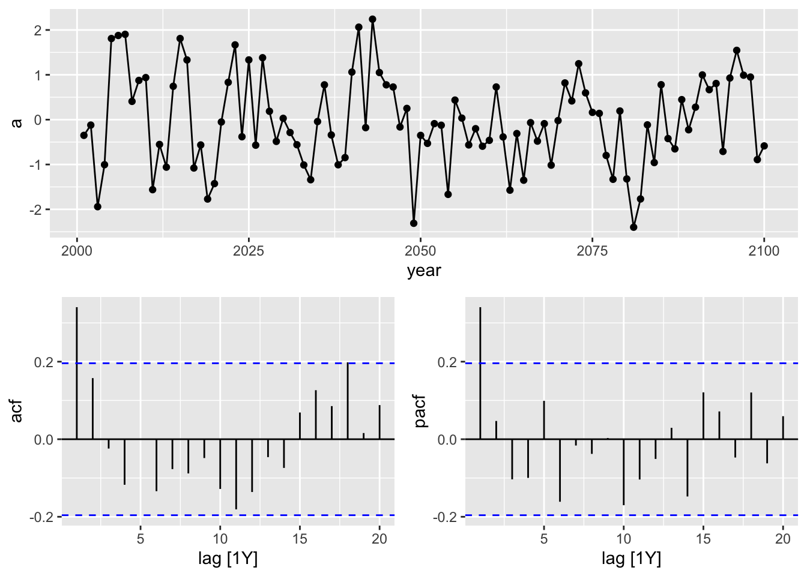
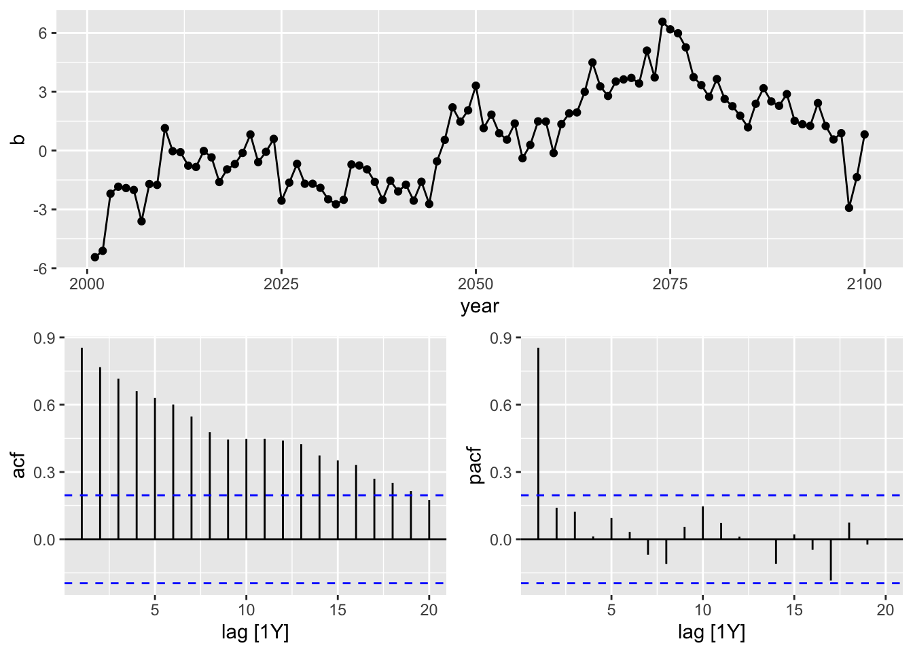
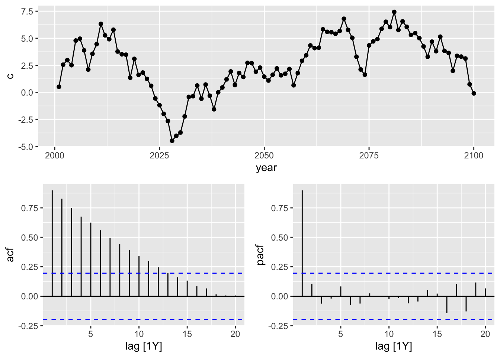
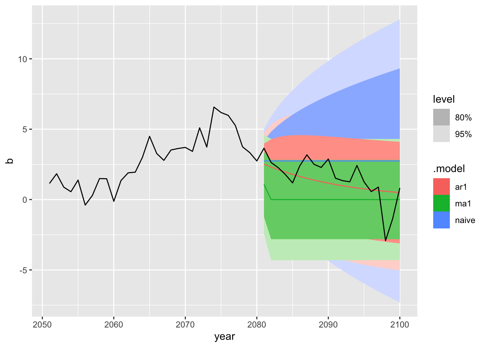
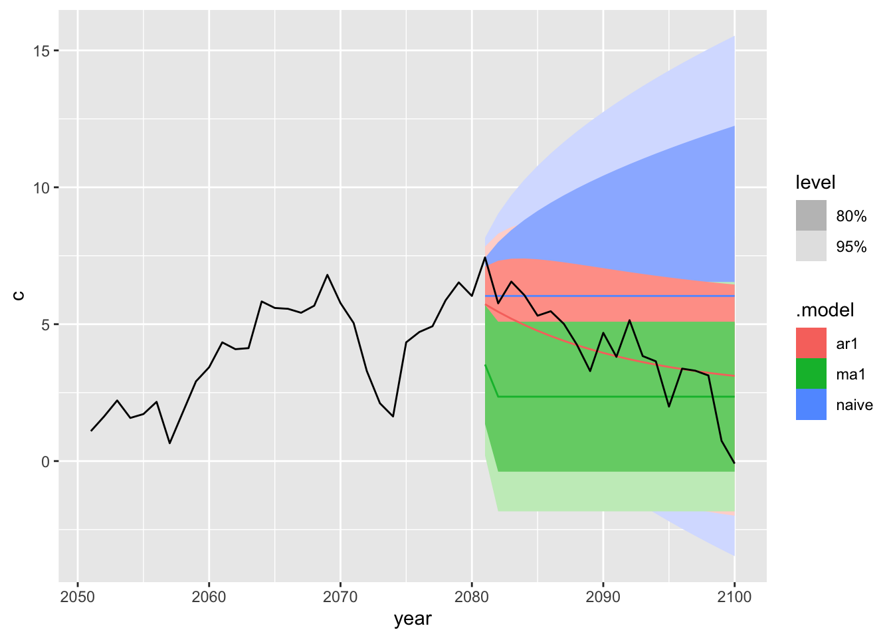
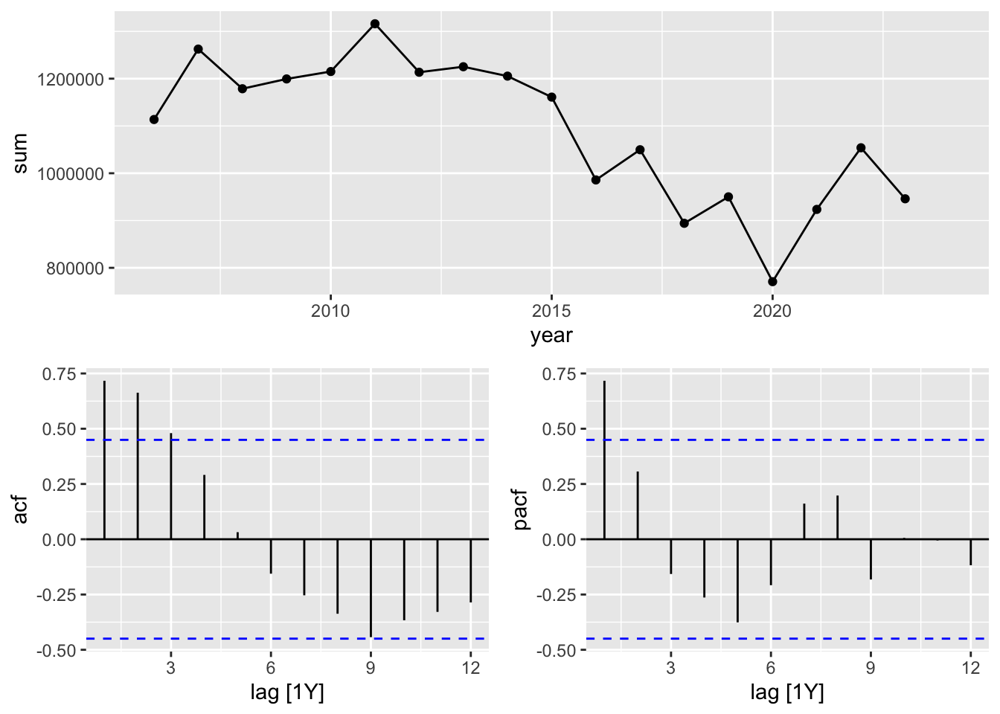

Chapter 5 ARMA processes
5.1 AR process
An \(\textbf{AR(p)}\) process is described by the following equation: \[ y_t = c + \beta_1 y_{t-1} + \ldots + \beta_p y_{t-p} + u_t, \] where \(u_t\) represents white noise, and \(\beta_p \neq 0\). This process is called a solution of the \(MA(\infty)\) relative to \(u_t\).
\(AR(p)\) process is stationary.
5.2 ARMA process
An \(\textbf{ARMA(p, q)}\) process is described by the following equation:
\[ y_t = c + \beta_1 y_{t-1} + \ldots + \beta_p y_{t-p} + u_t + \alpha_1 u_{t-1} + \ldots + \alpha_q u_{t-q}, \]
where \(u_t\) represents white noise, \(\beta_p \neq 0\), and \(\alpha_q \neq 0\). This process is called a solution of the \(MA(\infty)\) relative to \(u_t\).
5.3 Examples
# generate data
data <- tibble(a = arima.sim(n = 100,
model = list(ar = 0.5)),
b = arima.sim(n = 100,
model = list(ar = 0.9)),
c = cumsum(rnorm(n = 100, mean = 0, sd = 1)))


mod_b <- train |>
model(ar1 = ARIMA(b ~ pdq(1, 0, 0)), # is correct
ma1 = ARIMA(b ~ pdq(0, 0, 1)),
naive = NAIVE(b))mod_c <- train |>
model(ar1 = ARIMA(c ~ pdq(1, 0, 0)),
ma1 = ARIMA(c ~ pdq(0, 0, 1)),
naive = NAIVE(c)) # is correct

5.4 Comparing AR, MA and ARMA
## Rows: 24,852
## Columns: 4
## $ code <int64> 1000000000, 1000000000, 1000000000, 1000000000, 1000000000, 1000000000, 1000000000, 1000000000, 1000000000, 1000000000, 1000000000, 1000000000, 1…
## $ name <chr> "Алтайский край", "Алтайский край", "Алтайский край", "Алтайский край", "Алтайский край", "Алтайский край", "Алтайский край", "Алтайский край", "Ал…
## $ total <int> 953, 1007, 1311, 1554, 562, 1900, 2338, 3034, 2460, 1762, 1411, 1554, 1069, 1221, 1330, 1774, 609, 2107, 2708, 3272, 2483, 1825, 1721, 1940, 1006, …
## $ date <IDate> 2006-01-01, 2006-02-01, 2006-03-01, 2006-04-01, 2006-05-01, 2006-06-01, 2006-07-01, 2006-08-01, 2006-09-01, 2006-10-01, 2006-11-01, 2006-12-01, 2…m_agg <- m |> mutate(year = year(date)) |>
select(-date) |>
group_by(code, name, year) |>
summarise(sum = sum(total),
max = max(total),
.groups = 'keep')
glimpse(m_agg)## Rows: 2,071
## Columns: 5
## Groups: code, name, year [2,071]
## $ code <int64> 30, 30, 30, 30, 30, 30, 30, 30, 30, 30, 30, 30, 30, 30, 30, 30, 30, 30, 30, 31, 31, 31, 31, 31, 31, 31, 31, 31, 31, 31, 31, 31, 31, 31, 31, 31, 31…
## $ name <chr> "Центральный федеральный округ", "Центральный федеральный округ", "Центральный федеральный округ", "Центральный федеральный округ", "Центральный фед…
## $ year <dbl> 2006, 2007, 2008, 2009, 2010, 2011, 2012, 2013, 2014, 2015, 2016, 2017, 2018, 2019, 2020, 2021, 2022, 2023, 2024, 2006, 2007, 2008, 2009, 2010, 2011…
## $ sum <int> 287557, 328158, 300883, 314089, 311007, 338464, 308879, 317995, 322822, 313157, 263540, 284184, 239977, 259596, 205874, 260025, 295471, 262274, NA, …
## $ max <int> 40480, 42609, 50269, 45051, 45494, 44597, 44401, 49167, 48272, 44041, 39471, 42925, 41523, 38129, 33330, 37089, 36444, 35476, NA, 14000, 15693, 1800…rfy <- m_agg |> filter(code == 643) |>
as_tsibble(index = year)
rfy |>
gg_tsdisplay(sum, plot_type = 'partial') ## Warning: Removed 1 row containing missing values or values outside the scale range (`geom_line()`).## Warning: Removed 1 row containing missing values or values outside the scale range (`geom_point()`).
train <- rfy |> filter(year < 2020)
models <- train |>
model(ar1 = ARIMA(sum ~ pdq(1, 0, 0)),
ma1 = ARIMA(sum ~ pdq(0, 0, 1)),
naive = NAIVE(sum),
arma11 = ARIMA(sum ~ pdq(1, 0, 1)))## Series: sum
## Model: ARIMA(1,0,0) w/ mean
##
## Coefficients:
## ar1 constant
## 0.7069 326218.57
## s.e. 0.1872 20727.82
##
## sigma^2 estimated as 8.776e+09: log likelihood=-179.4
## AIC=364.8 AICc=367.2 BIC=366.72## [1] 14## [1] 19## # A tibble: 4 × 10
## .model .type ME RMSE MAE MPE MAPE MASE RMSSE ACF1
## <chr> <chr> <dbl> <dbl> <dbl> <dbl> <dbl> <dbl> <dbl> <dbl>
## 1 ar1 Test -115730. 140696. 115730. -13.7 13.7 1.51 1.49 -0.0462
## 2 arma11 Test -85991. 121657. 102760. -10.5 12.1 1.34 1.29 -0.0138
## 3 ma1 Test -203169. 221282. 203169. -23.4 23.4 2.64 2.35 0.0541
## 4 naive Test -26557. 104471. 78447. -4.18 9.11 1.02 1.11 0.0716